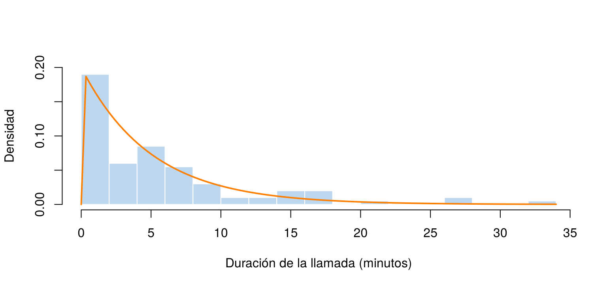
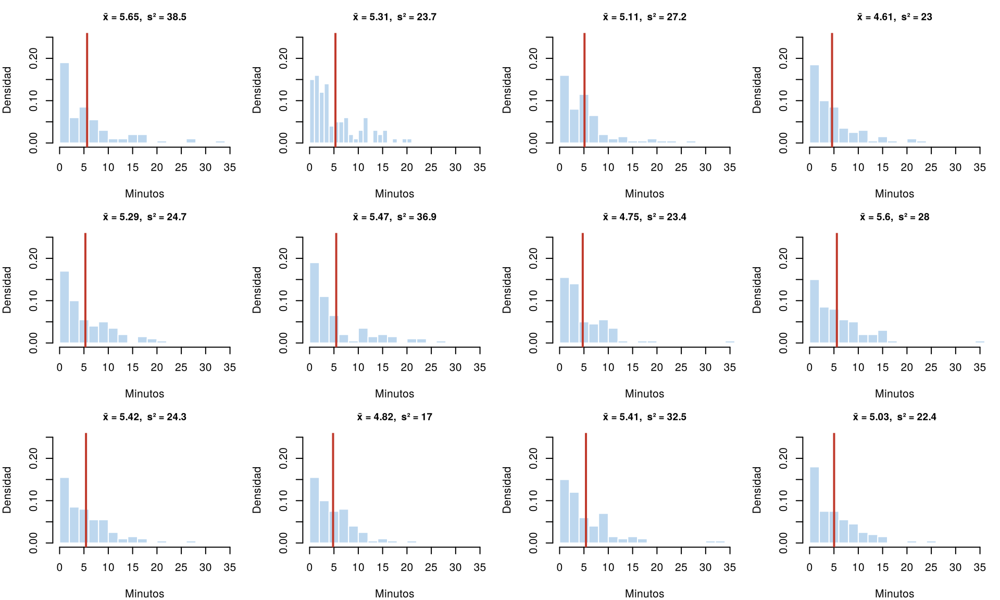

Un centro de atención quiere saber cuánto duran en promedio las llamadas de sus clientes. No puede medir todas las llamadas del año, pero sí puede revisar una parte de ellas. ¿Qué tanto se puede decir del total a partir de esa parte? Esa es la pregunta de la inferencia estadística: sacar conclusiones sobre una población a partir de una muestra, y medir qué tan confiables son esas conclusiones.
Esta página presenta los conceptos con los que se trabaja en el resto de la unidad: población, muestra, parámetro, estimador y estimación. Los bloques de código se ejecutan en orden.
La palabra población se usa de dos formas, y conviene distinguirlas:
| Variable | Población | Unidad de análisis |
|---|---|---|
| Duración de la batería | Duración de todas las baterías de teléfonos vendidas en Colombia en 2024 | Una batería vendida en Colombia en 2024 |
| Temperatura promedio diaria | Temperaturas promedio diarias de Bogotá en 2023 | Un día de 2023 en Bogotá |
| pH del agua | Mediciones de pH del río Magdalena en 2024 | Una muestra de agua tomada en 2024 |
La población puede ser finita, como las estaturas de los estudiantes de una universidad, o infinita, como los valores que puede producir un proceso que se repite indefinidamente. En el segundo caso, la población se describe con un modelo de probabilidad, como los de Modelos continuos.
Una muestra es una parte de la población, de tamaño \(n\), que sí se observa. Para que permita sacar conclusiones sobre la población, debe elegirse al azar. Hay dos formas de entender esto:
Los dos enfoques coinciden cuando la población es muy grande comparada con la muestra. Si la población es pequeña y el muestreo es sin reemplazo, las observaciones no son del todo independientes, como en el modelo hipergeométrico de Modelos discretos, y algunas fórmulas necesitan un ajuste que se verá en la unidad de intervalos de confianza.
Elegir al azar evita que la muestra favorezca sistemáticamente a algún grupo, pero cada muestra es distinta y ninguna reproduce exactamente a la población. Lo que el azar sí permite es medir qué tanto se puede equivocar una estimación. Eso es lo que hacen los intervalos de confianza y las pruebas de hipótesis.
La duración de las llamadas de un centro de atención en Bogotá sigue un modelo exponencial con media de 5 minutos. Como en la exponencial la media es \(1/\lambda\), la tasa es \(\lambda = 1/5\), y la varianza es \(1/\lambda^2 = 25\) minutos².
En la práctica la población es desconocida; aquí se conoce porque se
va a simular. La función rexp() genera una muestra de 100
duraciones:
set.seed(2026)
llamadas <- rexp(100, rate = 1/5)
round(head(llamadas, 10), 2) # las primeras 10 duraciones, en minutos [1] 1.99 0.57 7.54 4.18 0.55 20.37 4.34 0.81 26.85 1.92hist(llamadas, breaks = 20, freq = FALSE, col = "#BDD7EE", border = "white",
main = "", xlab = "Duración de la llamada (minutos)", ylab = "Densidad", ylim = c(0, 0.2))
curve(dexp(x, rate = 1/5), add = TRUE, col = "#FF7F00", lwd = 2)
Histograma de la muestra de 100 llamadas. La curva naranja es la densidad de la población, Exp(1/5).
| Concepto | Qué es | Ejemplo con las llamadas |
|---|---|---|
| Parámetro, \(\theta\) | Un número fijo que describe a la población. Casi siempre es desconocido | La media poblacional, \(\mu = 5\) minutos |
| Estimador, \(\hat{\theta}\) | Una fórmula que se aplica a la muestra para aproximar el parámetro | La media muestral, \(\bar{X} = \frac{1}{n}\sum X_i\) |
| Estimación | El número que resulta de aplicar el estimador a una muestra concreta | \(\bar{x} = 5.65\) minutos |
Los estimadores más usados son:
| Parámetro | Estimador | Fórmula | En R |
|---|---|---|---|
| Media, \(\mu\) | Media muestral | \(\bar{X} = \dfrac{1}{n}\sum_{i=1}^n X_i\) | mean() |
| Varianza, \(\sigma^2\) | Varianza muestral | \(S^2 = \dfrac{1}{n - 1}\sum_{i=1}^n (X_i - \bar{X})^2\) | var() |
| Desviación estándar, \(\sigma\) | Desviación estándar muestral | \(S = \sqrt{S^2}\) | sd() |
| Proporción, \(p\) | Proporción muestral | \(\hat{p} = \dfrac{\text{número de éxitos}}{n}\) | mean() de una condición |
Con la muestra de llamadas:
mean(llamadas) # estimación de la media, que es 5[1] 5.649233var(llamadas) # estimación de la varianza, que es 25[1] 38.45063mean(llamadas > 10) # estimación de P(X > 10), que es exp(-2) = 0.135[1] 0.16Las estimaciones no coinciden exactamente con los parámetros. La media muestral, 5.65, está cerca de 5. La varianza muestral, 38.5, se aleja más de 25, porque la muestra tiene algunas llamadas muy largas.
Si el centro de atención tomara otra muestra de 100 llamadas,
obtendría otros valores y, por tanto, otras estimaciones. Esta variación
se llama variabilidad muestral. La simulación permite
verla: replicate() toma 12 muestras de 100 llamadas de la
misma población, y apply() calcula la media y la varianza
de cada una.
set.seed(2026)
muestras <- replicate(12, rexp(100, rate = 1/5)) # cada columna es una muestra
medias <- apply(muestras, 2, mean)
varianzas <- apply(muestras, 2, var)
round(medias, 2) [1] 5.65 5.31 5.11 4.61 5.29 5.47 4.75 5.60 5.42 4.82 5.41 5.03round(varianzas, 1) [1] 38.5 23.7 27.2 23.0 24.7 36.9 23.4 28.0 24.3 17.0 32.5 22.4par(mfrow = c(3, 4), mar = c(4, 4, 2.5, 1))
for (j in 1:12) {
hist(muestras[, j], breaks = 15, freq = FALSE, col = "#BDD7EE", border = "white",
xlim = c(0, 35), ylim = c(0, 0.25), xlab = "Minutos", ylab = "Densidad",
main = paste0("x̄ = ", round(medias[j], 2), ", s² = ", round(varianzas[j], 1)), cex.main = 0.9)
abline(v = medias[j], col = "#C0392B", lwd = 2)
}
Histogramas de 12 muestras de 100 llamadas de la misma población. La línea roja es la media muestral de cada una.
Todas las muestras vienen de la misma población, pero sus histogramas y sus estimaciones cambian. Las medias muestrales están entre 4.61 y 5.65, alrededor de 5. Las varianzas muestrales varían mucho más, entre 17.0 y 38.5, alrededor de 25. Cuánto varía un estimador de una muestra a otra es lo que estudia la distribución muestral.
| Problema | Causa | Solución |
|---|---|---|
| Confundir el parámetro con la estimación | Se usa la misma palabra para el valor de la población y el de la muestra | El parámetro es fijo y desconocido; la estimación cambia con cada muestra |
| Calcular la varianza muestral dividiendo por \(n\) | Se usó la fórmula de la población | var() divide por \(n - 1\) |
| Creer que una muestra aleatoria reproduce exactamente a la población | Se confunde “al azar” con “representativa en todo” | Toda muestra tiene error; el azar permite medirlo |
| Sacar conclusiones de una muestra que no fue elegida al azar | Por ejemplo, encuestar solo a quienes responden voluntariamente | Elegir la muestra con un mecanismo aleatorio |
Una empresa quiere conocer el porcentaje de sus 5 000 clientes que está satisfecho con el servicio. Encuesta a 200 clientes elegidos al azar y 152 dicen estar satisfechos. Identifique la población, la muestra, el parámetro, el estimador y la estimación.
Repita la simulación de las 12 muestras, pero con muestras de 1 000 llamadas. ¿Las medias muestrales varían más o menos que con 100 llamadas?
set.seed(2026)
medias_1000 <- apply(replicate(12, rexp(1000, rate = 1/5)), 2, mean)
round(medias_1000, 2) [1] 5.20 5.11 5.26 5.26 4.73 5.30 5.26 5.04 5.10 5.24 4.97 4.84round(range(medias_1000), 2)[1] 4.73 5.30Con 1 000 llamadas, las medias quedan mucho más cerca de 5. Con muestras más grandes, la variabilidad muestral disminuye.
Con la muestra llamadas del ejemplo, estime la
proporción de llamadas que duran menos de 2 minutos. Compárela con el
valor de la población, pexp(2, rate = 1/5).
mean(llamadas < 2)[1] 0.38pexp(2, rate = 1/5)[1] 0.32968Última revisión: 7 de noviembre de 2026.